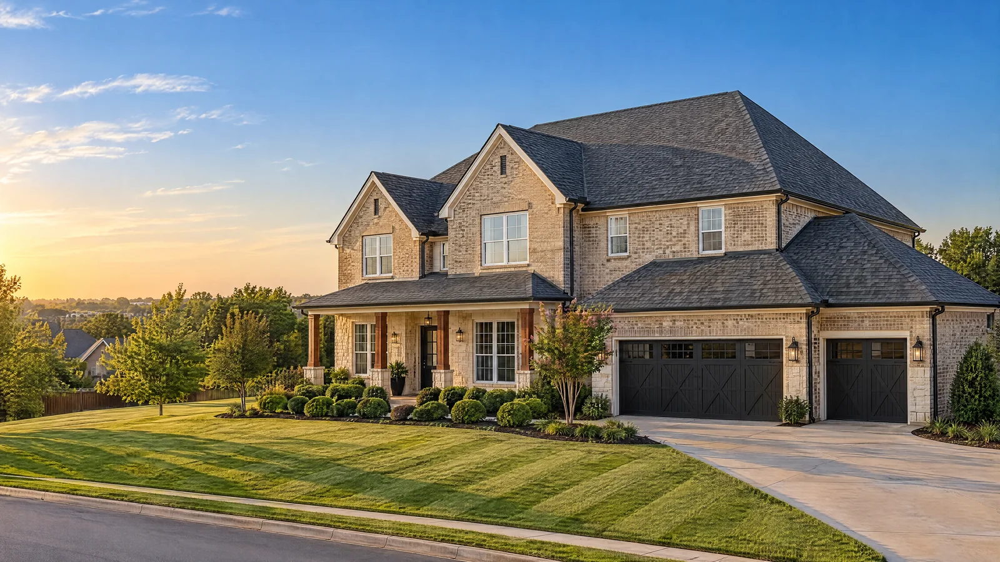
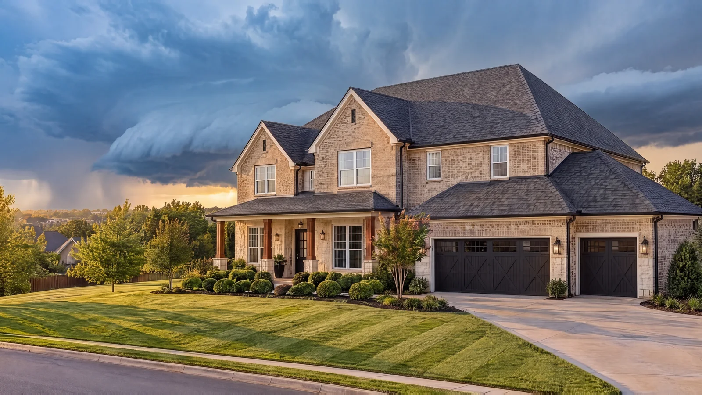

Hail came through. Is your roof okay?
Free roof inspection from a registered Oklahoma roofer. If it’s storm damage, Bob walks you through the insurance claim.
The claim, start to finish
Most people file one roof claim in their life. Bob has walked a lot of homeowners through it.
Inspection before you file
Find out whether there is real hail damage before a claim goes on your record.
Photos and a written scope
What’s damaged, where, and what it takes to fix it.
The adjuster visit
We can meet your adjuster at the house and walk the roof together.
Your deductible stays yours
Oklahoma law bars a roofer from paying or waiving any part of your deductible (59 O.S. §1151.30), and requires us to tell you so in writing with the estimate.
New roof, final paperwork
Install, cleanup, and the invoice your insurance company needs to close the claim.
Hail country needs a tougher shingle
MitchCo is a Malarkey Emerald Pro contractor, certified since 2020. Ask about Class 4 impact-rated shingles. Many insurers offer a discount for them in Oklahoma, so ask yours before you pick a shingle.
Roof inspections near you
Each town gets its own page: local storm history, jobs nearby, and reviews from neighbors. That is what ranks in Google.
Questions people ask
How do I know if hail damaged my roof?
Dents on gutters, downspouts and the mailbox are the first sign. On the roof, hail knocks granules loose and bruises the shingle. An inspection tells you for sure, and it’s free.
Should I call my insurance company first?
Get the roof inspected first. If there’s no real damage, you haven’t opened a claim for nothing.
How long do I have to file a claim?
For hail damage you can’t see without an inspection, Oklahoma requires policies to allow a claim up to 24 months after the storm (36 O.S. §1250.5). Damage you can see follows your policy’s own deadline, so check it.
Can I cancel if my claim gets denied?
Yes. If a roofing contract is paid from an insurance claim, Oklahoma lets you cancel within 72 hours of written notice that the claim was denied (59 O.S. §1151.21).
Are you registered in Oklahoma?
Yes. Oklahoma roofing contractor registration #80003131, in good standing with the Construction Industries Board.